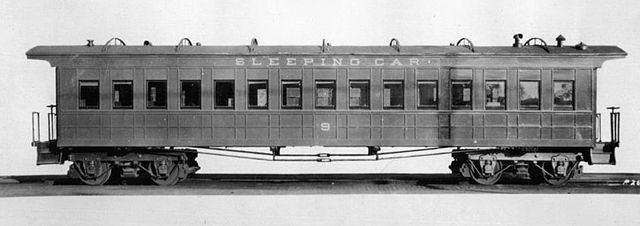

British Govt. Firm For An Increase of Fares On Railways
LONDON, July 30 – the government will stand firm regarding the increase of fares on the railways. Premier Lloyd George admitted in the House of Commons last night that the increases bore heavily on everybody, but he added, when wages and material went up at such a prodigious rate either the rates must increase or the burden fall upon the taxpayers.
Charles Higham moved the adjournment of the House, which, however, was rejected by 156 to 61, the feeling of the majority seemingly being that a postponement of an increase, even until after the holiday season, would only mean a still greater burden next year. The members were also probably impressed by what has been obvious for some days, and that is the sincere public disapproval of the increases has degenerated into something like a mere stunt by newspapers hostile to the government.